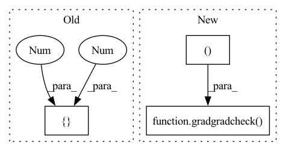

Pattern ID :8502

Before Change
lss = (xinv**2).sum()
return lss
compare_grad_with_fd(getloss, (A1, diag, b, biases, M1, mdiag), [0,1,2,3,4,5])
@device_dtype_float_test(only64=True)
def test_2grad_lsymeig(dtype, device):
After Change
return xinv
gradcheck(getloss, (A1, diag, b, biases, M1, mdiag))
gradgradcheck(getloss, (A1, diag, b, biases, M1, mdiag), atol=1e-3)
In pattern: SUPERPATTERN
Frequency: 3
Non-data size: 3
Instances
Fragment ID: 29475657
Project Name: xitorch/xitorch
Commit Name: 4fce23d25cfeade59e88259ba4416ffc299f4886
Time: 2020-04-03
Author: firman.kasim@gmail.com
File Name: lintorch/tests/test_grads.py
M Class Name: AnonimousClass
N Class Name: AnonimousClass
M Method Name: test_grad_solve(2)
N Method Name: test_grad_solve(2)
M Parent Class:
N Parent Class:
M File Name: lintorch/tests/test_grads.py
N File Name: lintorch/tests/test_grads.py
M Start Line: 125
M End Line: 125
N Start Line: 97
N End Line: 125
'>
Before Change
return loss
compare_grad_with_fd(getloss, (A1, diag, "eigvals"), [0, 1])
compare_grad_with_fd(getloss, (A1, diag, "eigvecs"), [0, 1])
@device_dtype_float_test(only64=True)
def test_grad_lsymeig_with_M(dtype, device):
After Change
gradcheck(getloss, (A1, diag, True))
gradcheck(getloss, (A1, diag, False))
gradgradcheck(getloss, (A1, diag, False))
gradgradcheck(getloss, (A1, diag, True), rtol=1e-4, atol=1e-4, eps=1e-3)
@device_dtype_float_test(only64=True)
def test_grad_lsymeig_with_M(dtype, device):
'>
Fragment ID: 29475687
Project Name: xitorch/xitorch
Commit Name: 3b0847cbb64e6886178de268de4d64957349e093
Time: 2020-04-03
Author: firman.kasim@gmail.com
File Name: lintorch/tests/test_grads.py
M Class Name: AnonimousClass
N Class Name: AnonimousClass
M Method Name: test_grad_lsymeig(2)
N Method Name: test_grad_lsymeig(2)
M Parent Class:
N Parent Class:
M File Name: lintorch/tests/test_grads.py
N File Name: lintorch/tests/test_grads.py
M Start Line: 40
M End Line: 41
N Start Line: 12
N End Line: 42
'>
Before Change
return lss
compare_grad_with_fd(getloss, (A1, diag, M1, mdiag, "eigvals"), [0, 1, 2, 3])
compare_grad_with_fd(getloss, (A1, diag, M1, mdiag, "eigvecs"), [0, 1, 2, 3])
@device_dtype_float_test(only64=True)
def test_grad_solve(dtype, device):
After Change
gradcheck(getloss, (A1, diag, M1, mdiag, False))
gradcheck(getloss, (A1, diag, M1, mdiag, True))
gradgradcheck(getloss, (A1, diag, M1, mdiag, False))
gradgradcheck(getloss, (A1, diag, M1, mdiag, True))
@device_dtype_float_test(only64=True)
def test_grad_solve(dtype, device):
'>
Fragment ID: 29475689
Project Name: xitorch/xitorch
Commit Name: 4fce23d25cfeade59e88259ba4416ffc299f4886
Time: 2020-04-03
Author: firman.kasim@gmail.com
File Name: lintorch/tests/test_grads.py
M Class Name: AnonimousClass
N Class Name: AnonimousClass
M Method Name: test_grad_lsymeig_with_M(2)
N Method Name: test_grad_lsymeig_with_M(2)
M Parent Class:
N Parent Class:
M File Name: lintorch/tests/test_grads.py
N File Name: lintorch/tests/test_grads.py
M Start Line: 89
M End Line: 90
N Start Line: 49
N End Line: 89